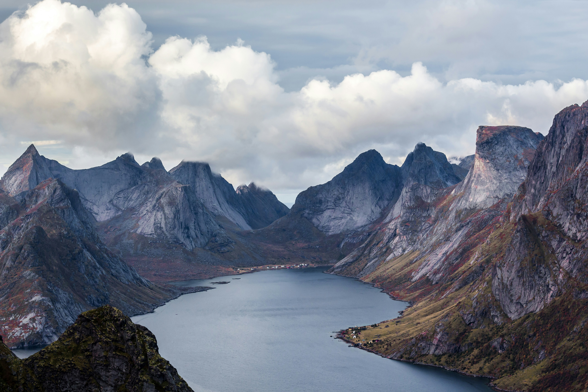

Cenne lekcje, które daje życie
Jako nastolatek w wieku 16 lat patrzę na świat zupełnie inaczej. Wierzę, że podróże kształcą o wiele lepiej niż jakiekolwiek podręczniki czy szkolne ławki. Odkrywanie nowej perspektywy i wychodzenie ze strefy komfortu uświadamiają mi, jak cenne jest nasze jedyne życie.
Nauka potwierdza, że intensywne doświadczanie nowych miejsc stymuluje neuroplastyczność mózgu, tworząc zupełnie nowe połączenia synaptyczne. Czasami rzeczywistość bywa skrajna i nieprzewidywalna, dlatego tym bardziej trzeba doceniać każdą chwilę oraz potęgę natury, która nas otacza.


Dlaczego kocham dzikość?
Zamiast sztywnego systemu i schematów, wybieram czystą przestrzeń. Droga uczy pokory, samodzielności i prawdziwego survivalu – od surowych, niedzidzonych krajobrazów Albanii, przez pół roku w Hiszpanii kamperem, aż po samotne, bezkompromisowe fiordy Norwegii.
Ciekawostka psychologiczna: kontakt z dziką przyrodą drastycznie obniża poziom kortyzolu (hormonu stresu) we krwi już po 20 minutach, resetując przebodźcowany cywilizacyjnie układ nerwowy.
Wybierz Swój Kierunek Wyprawy
Albania
Początek drogi, ucieczka ze szkoły przed końcem roku, mroźny strumień w Macedonii i noc na klifie.
Hiszpania
Pół roku w kamperze, zima stulecia, hiszpański klimat, codzienne życie i walka z awarią na autostradzie.
Norwegia
Samotna wyprawa urodzinowa z plecakiem i namiotem. Fiordy, surowy survival i potęga Północy.